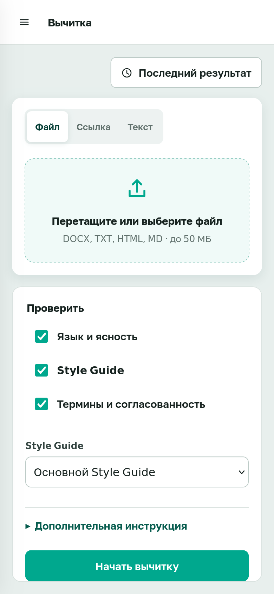

Очередь замечаний по русской документации.
Вставил текст. Vale, pymorphy3 и LanguageTool разобрали его у вас на машине. Модель можно не подключать.
git clone https://github.com/BadWisher/Peter-View.git
cd Peter-View
./deploy.shhttp://localhost:3080 · admin / admin · LanguageTool в первый раз думает около полутора минут.



Как проходит проверка
-
Источник
Вставляешь черновик, загружаешь docx или даёшь URL. Сервис сам ходит за страницей, если так настроили.
-
Три движка
Vale гоняет Style Guide, pymorphy3 смотрит формы слов, LanguageTool сидит в соседнем контейнере и проверяет грамматику.
-
Очередь
Каждое замечание отдельно: принять или отвергнуть. Список решений по этому тексту.
Сразу после установки
- Вычитка
- Style Guide
- История
- Аналитика
Выключено, пока не включишь
- Документы
- OpenAPI
- Наблюдение за страницами
- Редактор скриншотов
Флаги FEATURE_* в .env. Образ пересобирать не нужно.
Если это понесёт в прод
| Где крутится | Docker Compose на вашей машине |
|---|---|
| Память | LanguageTool ~1.5 ГБ, backend до 2 ГБ |
| Данные | Том backend-data, снимок: make backup |
| Модель | Пусто из коробки. Свой URL в настройках |
| Вход | Пароль или OIDC (Keycloak, Azure AD) |
| Лицензия | Apache-2.0 |